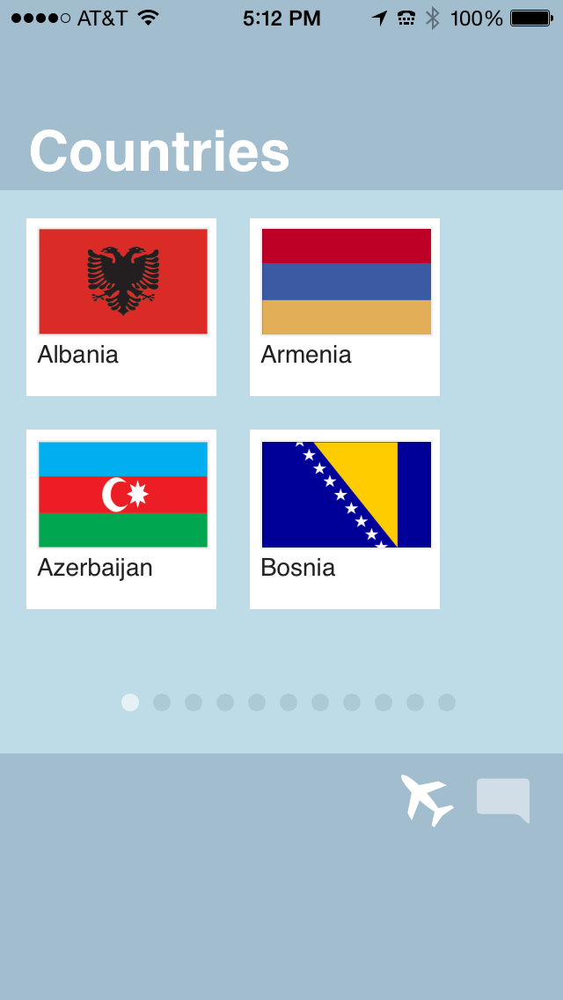
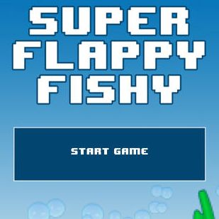

Russell Morgan
Web & Mobile developerI make websites, apps and games for myself and others.
I'm pretty good at HTML 5, Javascript, CSS3, Jquery, Appcelerator, Phonegap, Wordpress, Git, LESS & SASS, Unity 3D and a host of other technologies.
Here's a sample of what I've been working on.
Concept Farm
The Concept Farm is an advertising agency based in NYC. I was contracted to replace their existing Flash based site with a responsive html5 version.
The site is run by Wordpress with customized post types for easy updating of content.
Cheers Everybody
This is a mobile application available in the Apple app store that teaches you how to say "cheers" in various languages. It was built using phonegap and makes use of the zepto.js library.
The goal in creating this personal project was to see how close I could get to "native" performance using just HTML5.
You can check out what makes it tick by browsing my github repo.
Rotary Club
I was asked by Siegel & Gale to implement a parallax background effect for the Rotary Club homepage.
Using the stellar.js jquery plugin I was able to revise the existing HTML and work with the design team to tweak the amount of parallax for each element until the site had exactly the right balance of readability and animation.
Super Flappy Fishy
This is a mobile game for iphone. Arguably an "improved" version of Flappy Bird I wanted to challenge myself to see how quickly I could implement a game everyone was talking about.
Turns out the answer is 3 days. (and about 3 more weeks to iron out the iAd implementation in a way that made Apple happy)
And about the name? You have NO idea how hard it was to secure a name with the word "flappy" in it when I made this thing.
La Prairie Swiss Ice Crystals
I worked with Isobar to help bring to life the experience of visiting the Swiss Mountains in search of rare flowers and algae.
It uses javascript to detect mouse scroll (or finger swipe) and then repositions the content at various speeds and play HTML 5 video to create an immersive experience.

Waters Part Selector
Another project for Isobar, this is an iPad only app that uses HTML 5, phonegap and jquery mobile that allows users to search for parts that will fit their installed equipment.
Overall Murals
I worked with Frank Collective to create this Wordpress powered site. I've done a lot of soup to nuts custom WP stuff over the years...
Potatopia
Another Wordpress powered site with Frank Collective. (did I mention I did their site as well?) The challenge here was using multiple WP post types to power a single page site

Bad Fortune Cookie
A personal weekend project to try out my newly minted skills as a certified Appcelerator developer. The cookie dispenses funny misfortunes which were all written by a good friend of mine.
It's looking a bit long in the tooth now as I built it back when I had a non-retina iphone but still good for a laugh.
Other Stuff
I'm starting to run out of steam so I'll use this box to give you a quick hit list of other projects & clients I've been involved with over the past few years:
- American Express (Custom Kindle book)
- Sotheby's preferred access
- Waters.com
- Sony One Stadium
- HBO.com prototype for tablets
- Cinemax
- Carat Media
- BlueZones Project